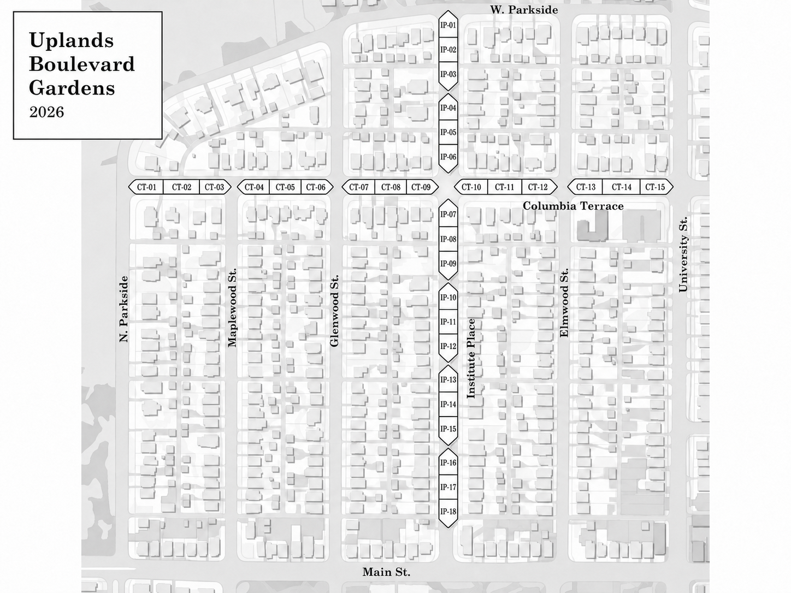

Choose a plot
Use the numbered map to find a convenient location, then claim that plot through SignUpGenius.
Boulevard Garden Stewardship
Choose one of the boulevard garden plots along Columbia Terrace or Institute Place and help care for it during the 2026 growing season. The map and signup make it easy to see what is available.
Choose a plot yourself or sign up with a neighbor.
2026 boulevard garden map
Columbia Terrace plots run west to east from CT-01 to CT-15. Institute Place plots run north to south from IP-01 to IP-18.
Claim a plot on SignUpGenius
What volunteering involves
Use the numbered map to find a convenient location, then claim that plot through SignUpGenius.
Visit when you can during the growing season to weed, tidy, and notice when the plot needs additional help.
Sign up with a friend, family member, or nearby neighbor if sharing responsibility makes the commitment easier.
A longstanding neighborhood effort
Neighbors have long maintained boulevard plantings on Columbia Terrace and Institute, and began an alley garden program in 2006. Today’s work continues that tradition at a manageable scale.
The current approach keeps participation straightforward: choose a numbered plot, care for it at a manageable pace, and ask for help when a larger task is needed.
Future coordination opportunity
Peoria Public Works has hosted annual spring giveaway days for city and county residents. Dates, eligibility, loading rules, and availability must be checked each year before the neighborhood coordinates around it.
See the City’s 2026 program example →Grow a place worth tending
Prefer to contribute materials or funds? General Beautification support remains available.